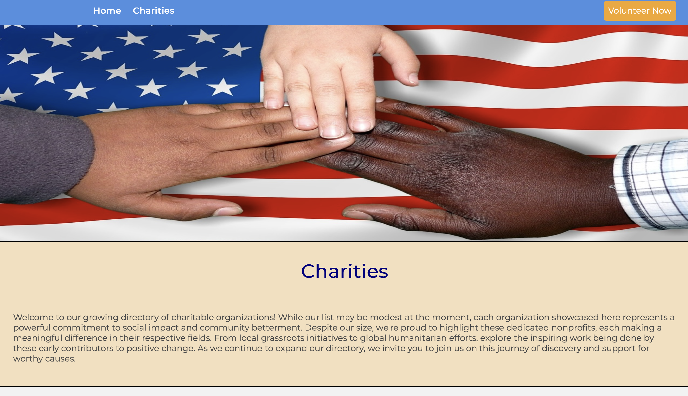
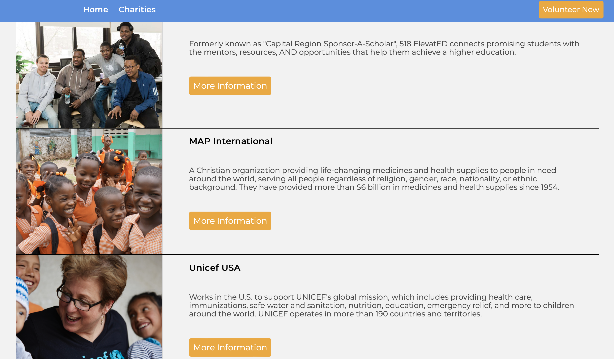

My Projects
Here is a collection of the projects and work I have completed, showcasing my skills and accomplishments. Each project includes a description, relevant images, and links to the GitHub repositories.
Project 1: Web Development Charity Website
In this project, we developed a website that introduces various charity organizations of our choice. The website was built using HTML, CSS, and JavaScript to create an informative and engaging platform for users to explore charitable causes.
 Project 2: Python Data Analysis
For this project, we scraped COVID-19 data from a website and analyzed the information using Python. We employed popular libraries such as Matplotlib for data visualization and BeautifulSoup for web scraping, providing insights into the pandemic’s trends and statistics.
Project 3: Python Command Line Game
In this project, we created a Python-based command-line game designed to raise awareness about social issues. I chose to address the topic of homelessness in the U.S., encouraging players to think critically about the issue.